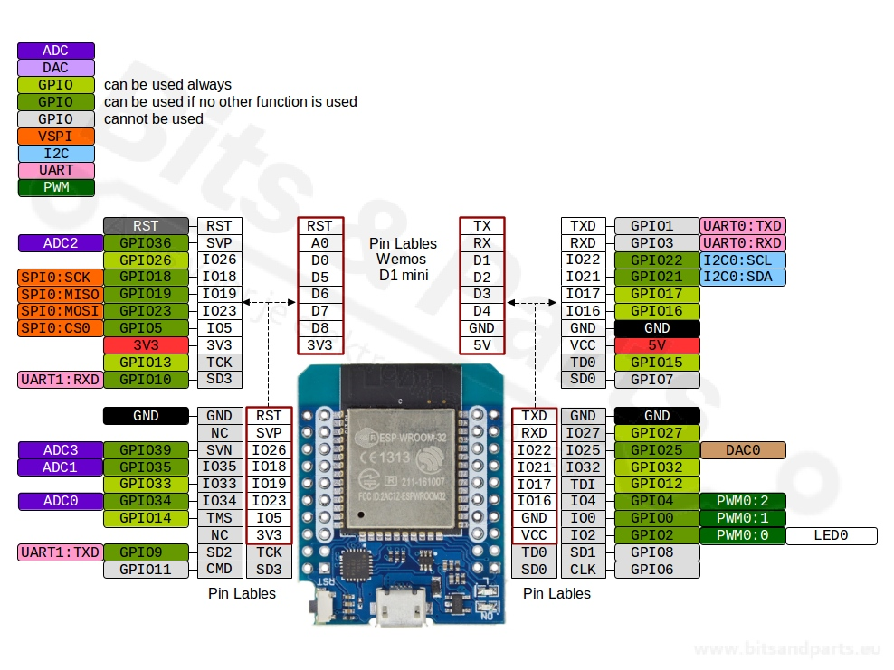

Pinout – MH-ET LIVE ESP32 MiniKIT (ESP32-WROOM-32, 40 pinů)

| Pin | GPIO | Typ | Výchozí funkce | Možné použití | Použítí | Poznámka |
|---|---|---|---|---|---|---|
| 1 | GND | PWR | Zem | GND | GND | |
| 2 | 3V3 | PWR | 3.3 V výstup | VCC | Zdroj 3.3V | Max ~600 mA |
| 3 | EN | CTRL | Chip enable | Reset | LOW = reset | |
| 4 | GPIO36 | ADC | ADC1_CH0 | Analog IN | M_IPROP | Pouze vstup, OK s Wi-Fi |
| 5 | GPIO39 | ADC | ADC1_CH3 | Analog IN | Pouze vstup, OK s Wi-Fi | |
| 6 | GPIO34 | ADC | ADC1_CH6 | Analog IN | B_STATUS | Pouze vstup, OK s Wi-Fi |
| 7 | GPIO35 | ADC | ADC1_CH7 | Analog IN | Pouze vstup, OK s Wi-Fi | |
| 8 | GPIO32 | IO | ADC1_CH4 | GPIO / ADC | M_SLEEP | OK s Wi-Fi |
| 9 | GPIO33 | IO | ADC1_CH5 | GPIO / ADC | D_RESET | OK s Wi-Fi |
| 10 | GPIO25 | IO | DAC1 / ADC2 | GPIO / DAC | M_FAULT | ⚠ ADC2 nefunguje s Wi-Fi |
| 11 | GPIO26 | IO | DAC2 / ADC2 | GPIO / DAC | ID_0 | ⚠ ADC2 nefunguje s Wi-Fi |
| 12 | GPIO27 | IO | ADC2_CH7 | GPIO / Touch | ID_1 | ⚠ ADC2 nefunguje s Wi-Fi |
| 13 | GPIO14 | IO | HSPI CLK | SPI / GPIO | D_DC/RS | ⚠ ADC2, strapping |
| 14 | GPIO12 | IO | ADC2_CH5 | GPIO | ⚠ Strapping, ADC2 + Wi-Fi | |
| 15 | GND | PWR | Zem | GND | ||
| 16 | GPIO13 | IO | HSPI MOSI | SPI / GPIO | ⚠ ADC2 nefunguje s Wi-Fi | |
| 17 | GPIO9 | FLASH | SPI Flash | — | Nepoužívat | |
| 18 | GPIO10 | FLASH | SPI Flash | — | Nepoužívat | |
| 19 | GPIO11 | FLASH | SPI Flash | — | Nepoužívat | |
| 20 | GPIO6 | FLASH | SPI Flash | — | Nepoužívat | |
| 21 | GPIO7 | FLASH | SPI Flash | — | Nepoužívat | |
| 22 | GPIO8 | FLASH | SPI Flash | — | Nepoužívat | |
| 23 | GPIO15 | IO | HSPI CS | GPIO / SPI | ⚠ Strapping, ADC2 | |
| 24 | GPIO2 | IO | BOOT | GPIO / LED | M_DIR | ⚠ HIGH při bootu, ADC2 |
| 25 | GPIO0 | IO | BOOT | GPIO / BOOT | M_PWM | ⚠ LOW = flash, ADC2 |
| 26 | GPIO4 | IO | GPIO | GPIO | LED_DATA | ⚠ ADC2 Wi-Fi |
| 27 | GPIO16 | IO | UART2 RX | GPIO / UART | ||
| 28 | GPIO17 | IO | UART2 TX | GPIO / UART | A_INT | |
| 29 | GPIO5 | IO | VSPI CS | GPIO / SPI | D_CS | ⚠ Strapping |
| 30 | GPIO18 | IO | VSPI SCK | GPIO / SPI | D_SCK | |
| 31 | GPIO19 | IO | VSPI MISO | GPIO / SPI | D_MOSI | |
| 32 | GND | PWR | Zem | GND | GND | |
| 33 | GPIO21 | IO | I2C SDA | GPIO / I2C | A_SDA | Doporučeno |
| 34 | GPIO3 | IO | UART0 RX | GPIO / UART | USB serial | |
| 35 | GPIO1 | IO | UART0 TX | GPIO / UART | USB serial | |
| 36 | GPIO22 | IO | I2C SCL | GPIO / I2C | A_SCL | Doporučeno |
| 37 | GPIO23 | IO | VSPI MOSI | GPIO / SPI | ||
| 38 | GND | PWR | Zem | GND | GND | |
| 39 | GPIO24 | — | — | — | (neexistuje) | |
| 40 | GND | PWR | Zem | GND | GND |
Poznámka k Wi-Fi:
Při zapnuté Wi-Fi nelze používat ADC2 (GPIO 0,2,4,12–15,25–27).
Pro analogové měření používej výhradně ADC1 (GPIO 32–39).
Legenda:
- M_ - signály pro DC motor driver
- D_ - signály pro displej
- LED_ - singály pro LED pásek
- A_ - signály pro akcelerometr
- B_ - singnály pro baterie
- ID_ - hardware identifikace